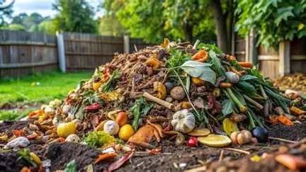
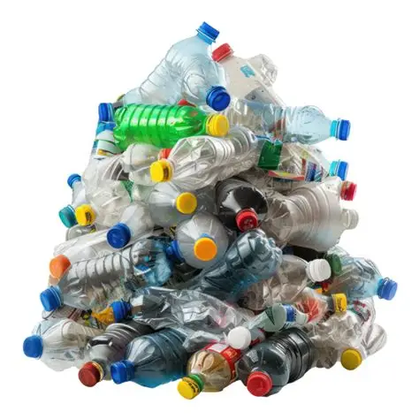
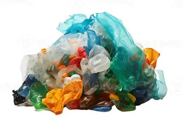
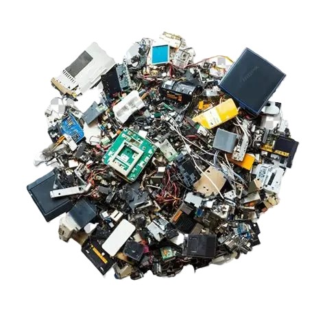

Waste Sorting & Composting Guide
Learn how to separate waste at home, protect drainage channels, and turn kitchen peelings into manure.
1. The 4 Household Waste Streams

Organic Kitchen Waste
What it is: Matooke peelings, cassava and sweet potato skins, leftover food, and vegetable scraps.
Disposal Tip: Do not bag in plastic. Turn into garden compost or use it as animal feed where suitable.

Rigid Plastics (PET & HDPE)
What it is: Drinking water bottles, soda bottles, cooking oil jerrycans, and plastic buckets.
Disposal Tip: Rinse, crush flat, and take to a plastic buy-back point (see the directory). Prices vary, so ask first.

Polythene Bags (Kavera)
What it is: Single-use plastic shopping bags, packaging wrappers, and bread bags.
Disposal Tip: Bundle clean bags together. Never dump into roadside drainage channels!

Batteries & E-Waste
What it is: Dry cell torch batteries, fluorescent tubes, phone chargers, and medical syringes.
Disposal Tip: Keep separate from general trash and ask your division health office about safe drop-off.
2. Step-by-Step Urban Backyard Composting
Make free garden fertilizer in your compound using a simple perforated 20-liter plastic bucket:
- Step 1 (Perforate): Drill 10–15 small aeration holes into the sides and bottom of an old plastic bucket.
- Step 2 (Base Layer): Add a 2-inch bottom layer of dry brown leaves or sawdust for drainage.
- Step 3 (Layer Organics): Add daily matooke peelings and food scraps, alternating with thin layers of dry soil.
- Step 4 (Moisture & Rest): Sprinkle lightly with water and cover. In 4 to 6 weeks, you have dark, odor-free manure!
Okulondamu Kasasiro mu Luganda (Summary in Luganda)
Okulondamu Kasasiro: Yawula ebikuta by’amatooke n’ebyokulya eby’okuvunda obiteeke mu kasasiro oba bikozese ng’ebigimusa. Obuveera n’obucupa bw’amazzi tebikasukibwa mu myala gy’amazzi; biweereze mu bifo ebigula ebyuma ebikadde n’amacupa ga pulasitiki okukuuma Kampala nga muyonjo.